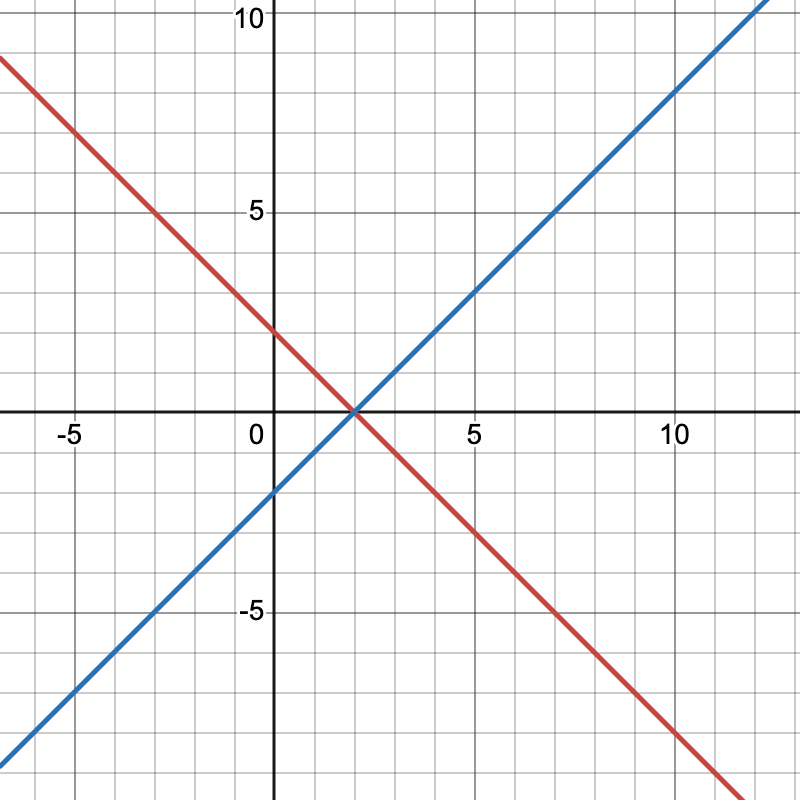
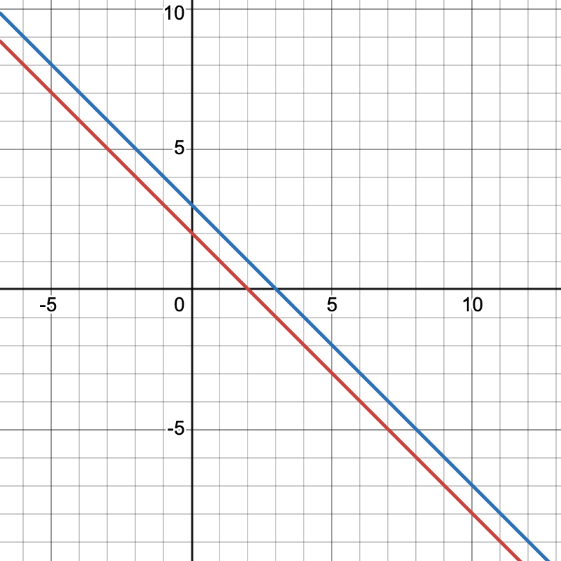
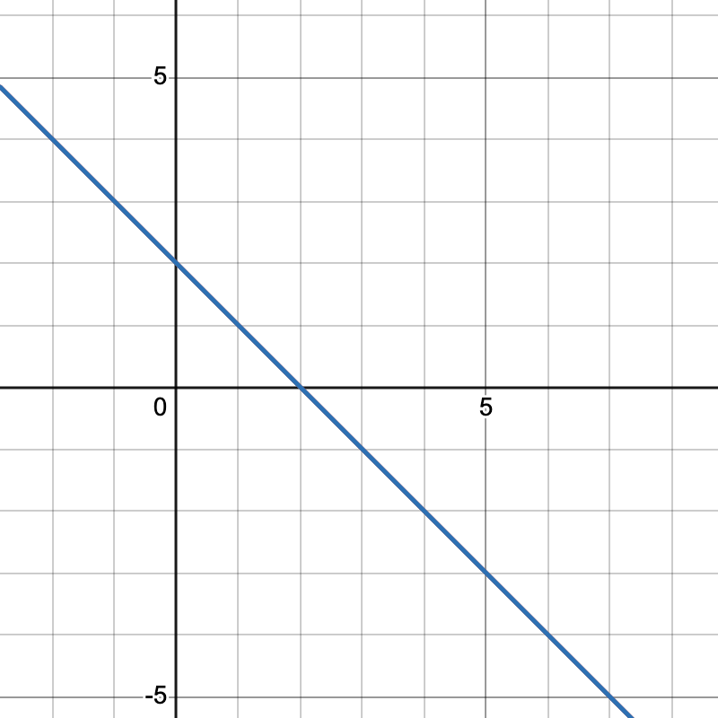

Systems and Linear Equations
\(\text{First we must define what a linear equation is.} \)
\(\text{A linear equation is an equation in the form }a_0x_0+a_1x_1+...+a_nx_n=b,\text{where }a_k\text{ and }b\text{ are constants} \)
\(\text{Consider familiar systems of linear equations in 2 and 3 dimensions. }\)
\(\textbf{Two dimensions: }\)
Intersecting linear equations
\(\text{The system has 1 solution}\)
Parallel linear equations
\(\text{The system has no solutions}\)
Coinciding linear equations
\(\text{The system has infinite solutions}\)
\(\text{This is also true of a system in three dimensions; there are three possibilities regarding the number of solutions:}\)
\(\textbf{Three dimensions: }\)
\(\text{0 solutions/intersections: }\)
\(\text{Numbers }3, 4, 5, 8\)
\(\text{1 solution/intersection: }\)
\(\text{Number }6\)
\(\text{Infinite solutions/intersections: }\)
\(\text{Numbers }1, 2, 7\)
.
.
\(\text{In fact, for any linear system with }n \text{ unknowns and }n\text{ variables, there are these 3 possibilities}\)
\(\text{You should already know how to do this but here are some }\)practice problems
Augmented Matrices and Guassian Elimination
\(\text{We can represent a system of linear equations as an augmented matrix.}\)
\[ \text{Consider the system: } \Biggl\{ \begin{align*} a_1x_1 + a_2x_2 = b_1 \\ a_3x_1 + a_4x_2 = b_2 \\ \end{align*} \text{ which can be represented by the augmented matrix } \begin{bmatrix} a_1 & a_2 & | & b_1 \\ a_3 & a_4 & | & b_2 \end{bmatrix} \]
\(\text{The way we construct augmented matrices is by taking the coefficient in from of each variable and putting it in its respective spot.}\)
\(\text{The RHS of the equation is simply augmented on the right side of the matrix.}\) Practice this!
\(\text{There are a variety of elementary row operations that allow one to use a augmented matrix to solve a system: }\)
\(\textbf{In a system we can }\text{both sides of an equation by a non-zero constant}\to\text{multiply a row by a non-zero constant}\)
\(\text{Interchange two equations}\to\text{Interchange any two rows}\)
\(\text{Add a constant times one equation to another}\to\text{Add a constant times one row to another}\)
\(\text{Matrices that can be equal to each other following a series of elementary row operations are called }\textbf{row equivilent}\)
\[ \text{For example these matrices are row equivilient:} \begin{bmatrix} 1 & 2 & 3 \\ 2 & 5 & 6 \end{bmatrix} \mathrel{\underset{\sim}{R}} \begin{bmatrix} 1 & 2 & 3 \\ 0 & 1 & 0 \end{bmatrix} \text{ by }R_2-2R_1\to{R_2} \]
\(\text{In order to solve a system using an augmented matrix, we want to get it into either }\textbf{Row Echelon Form }\text{or }\textbf{Reduced Row Echelon Form}\)
\(\text{Reduced Row Ecehlon Form (RREF) and Row Echelon Form (REF)}\)
\(\text{A matrix is in reduced row echelon form if:}\)
- \(\text{If a row does not consist entirely of 0s, the first non-zero number in the row is a 1 (called the leading 1)}\)
- \(\text{If there are any rows that consist entirely of 0s, they are grouped at the bottom of the matrix}\)
- \(\text{If there are two successive rows that have a leading 1, the leading 1 in the bottom row is farther to the right}\)
- \(\text{Each column that has a leading one has 0s in the rest of the column}\)
\(\text{Here are some examples of matrices in RREF form: }\)
\[ \begin{bmatrix} 1 & 0 & 0 & 5 \\ 0 & 1 & 0 & 3 \\ 0 & 0 & 1 & -1 \end{bmatrix}, \begin{bmatrix} 1 & 0 & 0 \\ 0 & 1 & 0 \\ 0 & 0 & 1 \end{bmatrix}, \begin{bmatrix} 0 & 0 \\ 0 & 0 \end{bmatrix}, \begin{bmatrix} 0 & 1 & 2 & 0 & -1 \\ 0 & 0 & 0 & 1 & 3 \\ 0 & 0 & 0 & 0 & 0 \\ 0 & 0 & 0 & 0 & 0 \end{bmatrix}, \begin{bmatrix} 1 & 0 & 0 & * \\ 0 & 1 & 0 & * \\ 0 & 0 & 1 & * \\ 0 & 0 & 0 & 0 \end{bmatrix} \]
\(\textbf{A matrix that has the first three properties is in REF form}\)
\(\text{Here are some examples of matrices in REF form but not in RREF: }\)
\[ \begin{bmatrix} 1 & 2 & 3 \\ 0 & 1 & 4 \\ 0 & 0 & 1 \end{bmatrix}, \begin{bmatrix} 1 & 0 & 6 & 5 \\ 0 & 1 & 0 & 3 \\ 0 & 0 & 1 & -1 \end{bmatrix}, \begin{bmatrix} 1 & 0 & 0 \\ 0 & 1 & 1 \\ 0 & 0 & 1 \end{bmatrix}, \begin{bmatrix} 1 & * & * & * \\ 0 & 1 & * & * \\ 0 & 0 & 1 & * \\ 0 & 0 & 0 & 0 \end{bmatrix} \]
\(\text{What does RREF tell us?}\)
\(\text{An example of a RREF of a system with a unique solution: }\)
\[ \begin{bmatrix} 1 & 0 & 0 & a \\ 0 & 1 & 0 & b \\ 0 & 0 & 1 & c \end{bmatrix} \text{corresponds to the equations } \begin{align*} x_1 &= a \\ x_2 &= b \\ x_3 &= c \end{align*} \implies\text{the system has a unique solution } (a,b,c) \]
\(\text{An example of a RREF of a system with no solutions (inconsistent): }\)
\[ \begin{bmatrix} 1 & 0 & 0 & a \\ 0 & 1 & 0 & b \\ 0 & 0 & 0 & c \end{bmatrix} \text{(in the case }c\neq0\text{) corresponds to the equations } \begin{align*} x_1 &= a \\ x_2 &= b \\ 0 &= c \end{align*} \implies\text{the system has no solutions since }c\neq0 \]
\(\text{An example of a RREF of a system with infinite solutions: }\)
\[ \begin{bmatrix} 1 & 0 & 1 & a \\ 0 & 1 & 2 & b \\ 0 & 0 & 0 & 0 \end{bmatrix} \text{corresponds to the parametric equations } \begin{align*} x_1 &= a - x_3 \\ x_2 &= b - 2x_3 \\ \end{align*} \text{. This is called the }\textbf{general solution }\text{of the system} \]
Practice this!\(\text{We can use the elementary row operations to get a matrix into RREF or REF.}\)
\(\text{A general algorithm for converting a matrix into RREF form}\)
\(1. \text{ Locate the leftmost column that does not consist entirely of zeros}\)
\(2. \text{ Interchange the top row with another row, if necessary, to bring a nonzero entry to the top of the column found in Step 1}\)
\(3. \text{ Letting the entry at the top of the column mentioned in step 1 be equal to }a\text{, multiply the first row by }\frac{1}{a}\text{ in order to have a leading one}\)
\(4. \text{ Add multiples of the top row to each row beneath it s.t. all entries below the leading 1 are zero. }\)
\(5. \text{ Repeat steps 1-4, pretending the row you just dealt with (and the rows before that) don't exist}\)
\(6. \text{ Repeat step 5 for all rows. You matrix should be in REF now.}\)
\(7. \text{ Introduce 0s above the ones starting from the rightmost non-zero row and moving leftwards. }\)
\(\text{Example 1 (see if you can see why each matrix is row-equivilient)}\)
\( \begin{bmatrix} 2 & 5 & 6 \\ 1 & 2 & 3 \\ 0 & 2 & 1 \end{bmatrix} \mathrel{\underset{\sim}{R}} \begin{bmatrix} 1 & 2 & 3 \\ 2 & 5 & 6 \\ 0 & 2 & 1 \end{bmatrix} \mathrel{\underset{\sim}{R}} \begin{bmatrix} 1 & 2 & 3 \\ 0 & 1 & 0 \\ 0 & 2 & 1 \end{bmatrix} \mathrel{\underset{\sim}{R}} \begin{bmatrix} 1 & 2 & 3 \\ 0 & 1 & 0 \\ 0 & 0 & 1 \end{bmatrix} \mathrel{\underset{\sim}{R}} \begin{bmatrix} 1 & 2 & 0 \\ 0 & 1 & 0 \\ 0 & 0 & 1 \end{bmatrix} \mathrel{\underset{\sim}{R}} \begin{bmatrix} 1 & 0 & 0 \\ 0 & 1 & 0 \\ 0 & 0 & 1 \end{bmatrix} \)
\(\text{Example 2}\)
\( \begin{bmatrix} 0 & 5 & 10 & 3 \\ 2 & 7 & 3 & 0 \\ 0 & 2 & 1 & -1 \end{bmatrix} \mathrel{\underset{\sim}{R}} \begin{bmatrix} 2 & 7 & 3 & 0 \\ 0 & 5 & 10 & 3 \\ 0 & 2 & 1 & -1 \end{bmatrix} \mathrel{\underset{\sim}{R}} \begin{bmatrix} 1 & \frac{7}{2} & \frac{3}{2} & 0 \\ 0 & 5 & 10 & 3 \\ 0 & 2 & 1 & -1 \end{bmatrix} \mathrel{\underset{\sim}{R}} \begin{bmatrix} 1 & \frac{7}{2} & \frac{3}{2} & 0 \\ 0 & 1 & 2 & \frac{3}{5} \\ 0 & 2 & 1 & -1 \end{bmatrix} \mathrel{\underset{\sim}{R}} \begin{bmatrix} 1 & \frac{7}{2} & \frac{3}{2} & 0 \\ 0 & 1 & 2 & \frac{3}{5} \\ 0 & 0 & -3 & -\frac{11}{5} \end{bmatrix} \mathrel{\underset{\sim}{R}} \begin{bmatrix} 1 & \frac{7}{2} & \frac{3}{2} & 0 \\ 0 & 1 & 2 & \frac{3}{5} \\ 0 & 0 & 1 & \frac{11}{15} \end{bmatrix} \mathrel{\underset{\sim}{R}} \)
\( \begin{bmatrix} 1 & \frac{7}{2} & \frac{3}{2} & 0 \\ 0 & 1 & 0 & -\frac{13}{15} \\ 0 & 0 & 1 & \frac{11}{15} \end{bmatrix} \mathrel{\underset{\sim}{R}} \begin{bmatrix} 1 & \frac{7}{2} & 0 & -\frac{11}{10} \\ 0 & 1 & 0 & -\frac{13}{15} \\ 0 & 0 & 1 & \frac{11}{15} \end{bmatrix} \mathrel{\underset{\sim}{R}} \begin{bmatrix} 1 & 0 & 0 & \frac{29}{15} \\ 0 & 1 & 0 & -\frac{13}{15} \\ 0 & 0 & 1 & \frac{11}{15} \end{bmatrix} \)
\(\text{This algorithm for reducing a matrix to RREF is called }\textbf{Guass-Jordan}\text{ elminiation.}\)
\(\text{When the matrix is only reduced to REF (steps 1-6) and back-substituion is employed, this is called }\textbf{Guassian}\text{ eliminination}\)
Homogeneous Linear Systems
\(\text{A system of linear equation is homogeneous if all the constant terms are zero or if it's in the following form: }\)
\[ \begin{align*} a_{11}x_1 + a_{12}x_2 + ... + a_{1n}x_n &= 0 \\ a_{21}x_1 + a_{22}x_2 + ... + a_{2n}x_n &= 0 \\ \vdots \qquad\qquad\qquad \vdots \qquad\qquad &\vdots \quad \vdots \\ a_{m1}x_1+a_{m2}x_2+...+a_{mn}x_n &= 0 \end{align*} \]
\(\text{Every homogeneous system of linear equations is consistent, having }(0,0,...,0)\text{ as a solution.}\)
\(\text{This means the system either only has the trivial solution or has infinitely many solutions in addition to the trivial solution.}\)
Theorem 1.1: If a homogeneous linear system has \(n\) unknowns, and if the RREF of its augmented matrix has \(r\) nonzero rows, then the system has \(n-r\) free variables.
Theorem 1.2: A homogeneous linear system with more unknowns than equations has infinitely many solutions.
Theorem 1.3: Elementary row operations do not alter columns of zeros in a matrix
Practice this!Matrices and Matrix Operations
Definition 1: A matrix is a rectangular array of numbers. The numbers in the array are called the entries of the matrix.
\(\text{A matrix with one row is called a row vector and a matrix with one column is called a column vector}\)
\(\text{Matrix Notation}\)
\[ \text{We use capital letters to denote matrices and lowercase letters to denote numerical quantities: } \]
\[ A = \begin{bmatrix} 8 & 3 & 5 \\ 9 & 1 & 3 \end{bmatrix} \quad\text{or }\quad B = \begin{bmatrix} a & b & c \\ d & e & f \end{bmatrix} \]
\(\text{However, there are more compact ways to denote matrices: }\)
\[ \text{Consider the }m\times{n}\text{ matrix }A= \begin{bmatrix} a_{11} & a_{12} & ... & a_{1n} \\ a_{21} & a_{22} & ... & a_{2n} \\ \vdots & \vdots & \ddots & \vdots \\ a_{m1} & a_{m2} & ... & a_{mn} \end{bmatrix} \text{which can be denoted also by }A=[a_{ij}]_{m\times{n}}\text{ or }A=[a_{ij}] \]
\( \text{The notation }(A)_{ij}\text{ or }A_{ij}\text{ is used to denote the entry in the }i\text{th row and }j\text{th column of matrix }A. \)
\( \text{For row and column vectors, the notation is as follows: }\vec{a}=[a_1, a_2, ..., a_n]\text{ and }\vec{b}= \begin{bmatrix} b_1 \\ b_2 \\ \vdots \\ b_n \end{bmatrix} \)
\(\text{Matrix Operations}\)
Definition 2: Two matrices are equal if they have the same size and their corresponding entries are equal
Definition 3: If \(A\) and \(B\) have the same size, \(A+B\) is the matrix that results from adding the entries of \(B\) to the corresponding entries of \(A\). Subtraction works similarly. Matrices cannot be added or subtracted if they have different size.
\(\text{Using matrix notation, if }A\text{ and }B\text{ have the same size, }(A\pm{B})_{ij}=(A)_{ij}\pm(B)_{ij}=a_{ij}\pm{b}_{ij}\)
Definition 4: Let \(A\) be some matrix and \(c\) be some scalar. The product \(cA\) is the matrix obtained by multiplying each entry of \(A\) by \(c\)
\(\text{Using matrix notation, if }A=[a_{ij}], (cA)_{ij}=c(A)_{ij}=ca_{ij}\)
Definition 5: The product of two matrices \(A\) and \(B\) is defined in the case where \(A\) is an \(m\times{r}\) matrix and \(B\) is an \(r\times{n}\) matrix. The product \(AB\) is the matrix obtained whose entry \(a_{ij}\) is equal to the sum of the products of the entries of the \(i\text{th}\) row of matrix \(A\) with the corresponding entries from column \(j\) of matrix \(B\)
\(\text{Using matrix notation, }(AB)_{ij}=a_{i1}b_{1j}+a_{i2}b_{2j}+a_{i3}b_{3j}+...+a_{ir}b_{rj}\)
\(\text{Examples of each matrix operation}\)
\[ \text{Let }A=\begin{bmatrix} 1 & 2 & 3 \\ 4 & 5 & 6 \end{bmatrix}, B=\begin{bmatrix} 7 & 8 & 9 \\ 10 & 11 & 12 \end{bmatrix}, C=\begin{bmatrix} 13 & 14 \\ 15 & 16 \\ 17 & 18 \end{bmatrix} \]
\[ \text{Addition/Subtraction and scalar multiplication: } \] \( A+B=\begin{bmatrix} 1+7 & 2+8 & 3+9 \\ 4+10 & 5+11 & 6+12 \end{bmatrix}=\begin{bmatrix} 8 & 10 & 12 \\ 14 & 16 & 18 \end{bmatrix} \text{ and }A-B=\begin{bmatrix} 1-7 & 2-8 & 3-9 \\ 4-10 & 5-11 & 6-12 \end{bmatrix}=\begin{bmatrix} -6 & -6 & -6 \\ -6 & -6 & -6 \end{bmatrix}=-6\begin{bmatrix} 1 & 1 & 1 \\ 1 & 1 & 1 \end{bmatrix} \) \[ \text{Matrix Multiplication: } \] \[ AB \text{ is undefined since the number of columns in }A\text{ does not equal the number of rows in }B \\ \] \[ \text{However, }AC=\begin{bmatrix} 1 & 2 & 3 \\ 4 & 5 & 6 \end{bmatrix}\begin{bmatrix} 13 & 14 \\ 15 & 16 \\ 17 & 18 \end{bmatrix}\text{ which is }(2\times{3})\times{(3\times{2})}\text{ which results in a }2\times{2}\text{ matrix} \] \[ AC=\begin{bmatrix} 1\cdot13+ 2\cdot15+3\cdot17 & 1\cdot14+2\cdot16+3\cdot18 \\ 4\cdot13+5\cdot15+6\cdot17 & 4\cdot14+5\cdot16+6\cdot18 \end{bmatrix}=\begin{bmatrix} 94 & 108 \\ 229 & 264 \end{bmatrix}\text{ but }CA\text{ is undefined. } \]